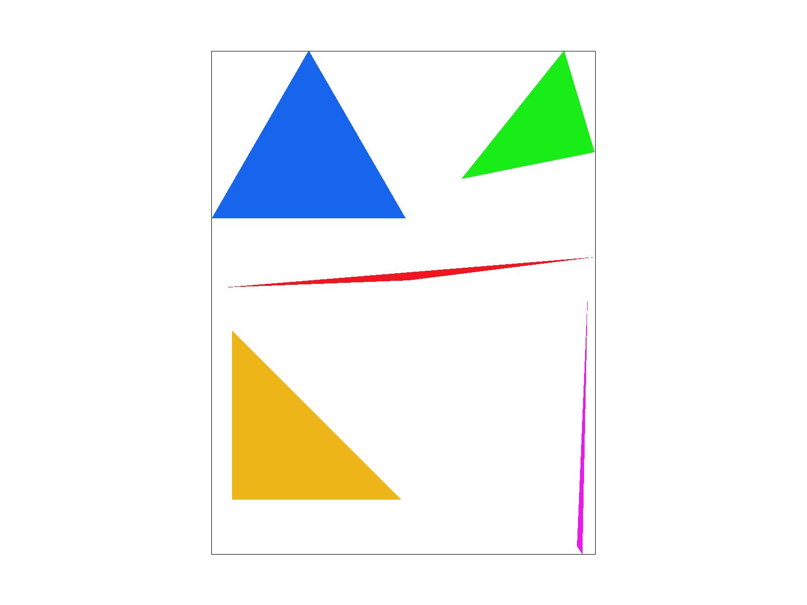
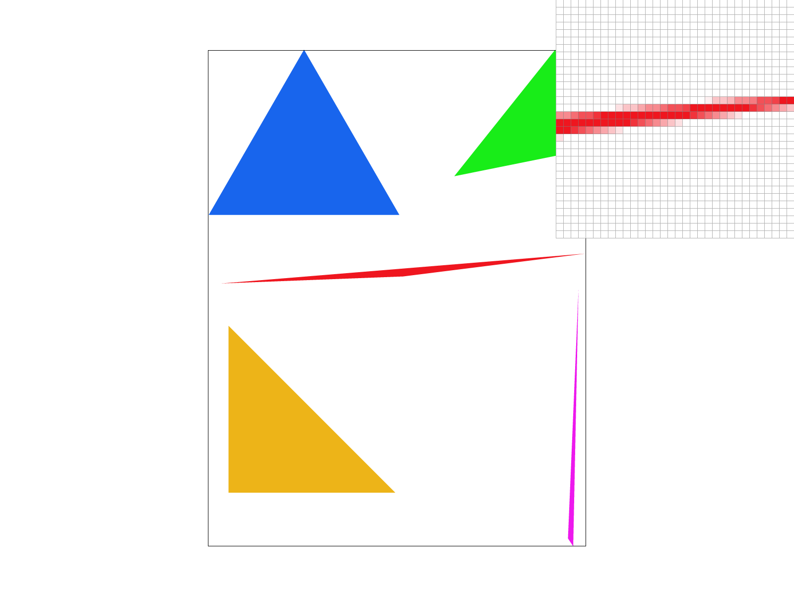
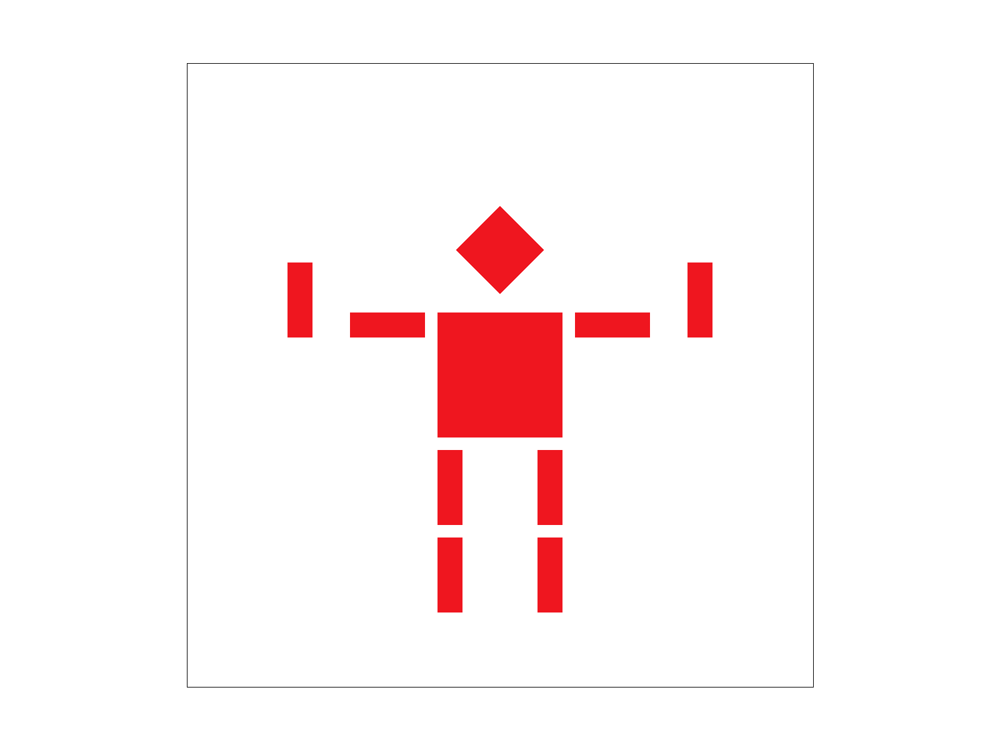
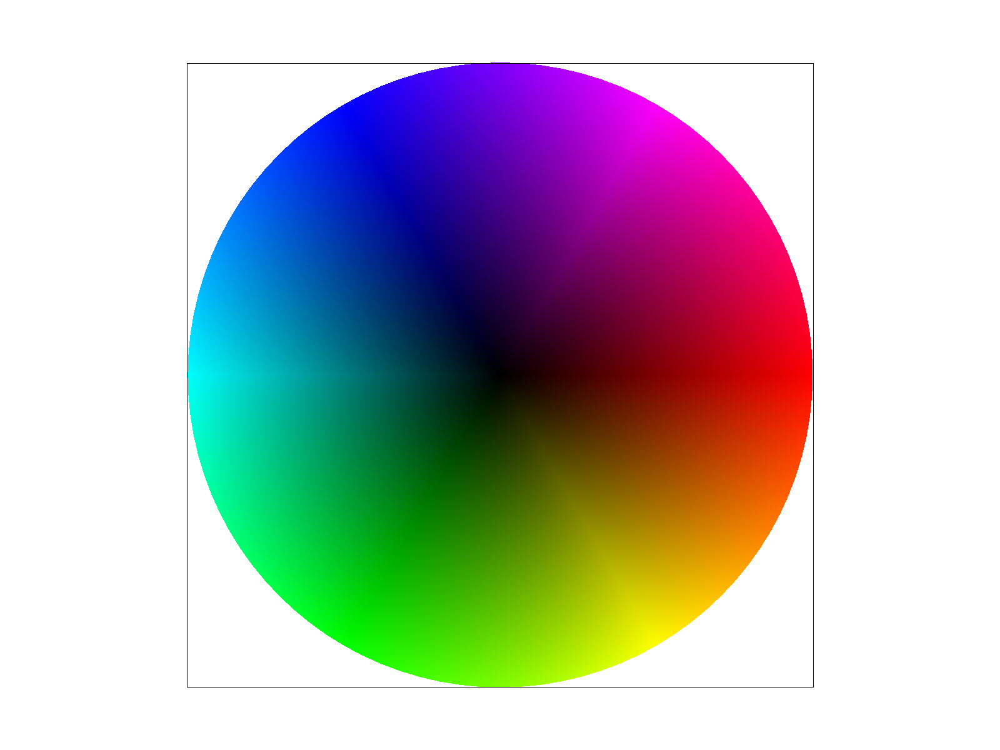
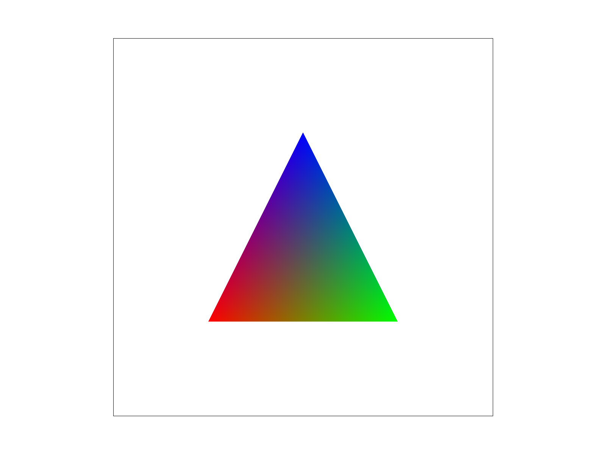
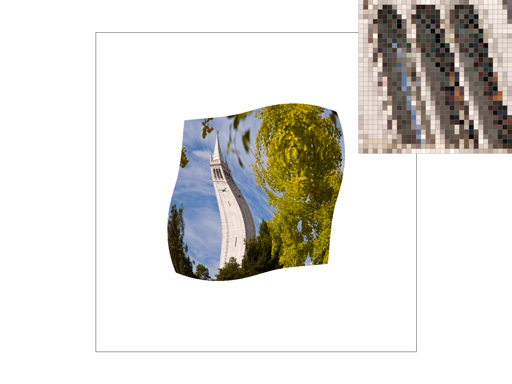
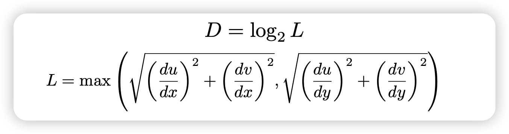

Give a high-level overview of what you implemented in this homework. Think
about what you've built as a whole. Share your thoughts on what
interesting things you've learned from completing the homework.
Task 1: Drawing Single-Color Triangles
With the three points given, we first find the bounding box of the
triangle. We check the coordinates of three points and then find the
minimum or maximum values to determine the boundaries of the bounding box.
We then iterate through each pixel inside the box, checking if its center
is inside the triangle by the three-line test. The three-line test checks
if L0, L1, and L2 are all positive or all negative, ensuring the point is
on the same side of each edge, meaning it lies inside or on the boundary
of the triangle. If it is, we rasterize the point. Our algorithm is
exactly the one that “ checks each sample within the bounding box of the
triangle,” so it’s definitely no worse than it.
Here is an example 2x2 gridlike structure using an HTML table. Each
tr is a row and each td is a column in that row. You might
find this useful for framing and showing your result images in an
organized fashion.

Task 1
Caption goes here.
Caption goes here.
Caption goes here.
Task 2: Antialiasing by Supersampling
1. Since supersampling is not required for points and lines, to make them
look normal under supersampling, we change fill_pixel to fill all samples
in a pixel with the same color. 2. To make enough space for supersampling,
we multiply the original size of the sample buffer by sample_rate. 3. We
also need to change the sample buffer size when the window size changes;
this is achieved in set_framebuffer_target by simply multiplying the
original size by the sample rate. 4. In Task 1, we only tested one point
per pixel (at pixel center). For Task 2, we modify rasterize_triangle to
test multiple sample points within each pixel (in a sqrt(sample_rate) ×
sqrt(sample_rate) grid) and store each sample's color in the sample
buffer. 5. Finally, we average the colors in resolve_to_buffer—instead of
just one color like in Task 1—within each pixel to complete our
supersampling. As the sample rate increases, the edges of the triangle
appear smoother. By averaging the colors of all sub-samples within each
pixel, we achieve more gradual transitions along the edges, thereby
reducing the jagged look.
Sample rate 1
Sample rate 4

Sample rate 16
Caption goes here.
Task 3: Transforms
Cubeman is surrendering ✋🤖🤚.

Task 3
Task 4: Barycentric coordinates
Barycentric coordinates provide a method for representing the position of
a point relative to the three vertices of a triangle. They enable linear
interpolation of values at the vertices, making them useful for defining
position, color, texture, and other attributes. The triangle we created in
the picture below has red, green, and blue as its respective vertex
colors; inside the triangle, the closer a point is to a vertex, the more
similar its color to the vertex’s color. And in the middle of the
triangle, where the point has an equal distance to three vertices, we can
see its color is a blend of red, green, and blue.

Task 4

Triangle
Task 5: "Pixel sampling" for texture mapping
Here we use pixel sampling to determine the texture color of a pixel. We
do so by finding each sample point's texture coordinates using barycentric
interpolation after confirming the point is inside the triangle using the
three line test. With each sample point's UV coordinates, we can find its
position in texture space; then, we use methods like sample_nearest and
sample_bilinear to get its color. In nearest neighbor sampling, we use the
color of the nearest texel directly; while in bilinear sampling, we blend
the colors of the four closest texels using linear interpolation. The
nearest sampling tends to produce sharp and distinct colors within each
pixel since it is determined by a single texel; this results in visible
transitions between pixels as their colors can differ significantly. For
bilinear sampling, since we interpolate between four texels, we get much
smoother transitions between colors, meaning the change between adjacent
pixels is more gradual. We may infer, then, that the difference between
these two methods becomes most apparent in areas where the texture
transitions between contrasting colors, or when the texture is viewed at
an angle or magnified.

Nearest sampling at 1 sample per pixel
Nearest sampling at 16 samples per pixel
Bilinear sampling at 1 sample per pixel
Bilinear sampling at 16 sample per pixel
Task 6: "Level Sampling" with mipmaps for texture mapping
Level sampling is used for texture antialiasing; it is a method of
filtering before sampling and is cheaper compared to supersampling for
textures. The process of texture mapping is basically the same as in task
5, except that here we also need to find the UV coordinates of (x+1, y)
and (x, y+1), which helps us determine how quickly the texture coordinates
are changing and tells us which mipmap level to use. To compute the level
of our sample points we use the formula below.

We then need to address each combination between different pixel sample
methods and level sampling methods. Most of them are straightforward,
except for L_linear, where we need to compute the weighted sum of adjacent
miplevels. L_ZERO uses the zeroth mip level, which corresponds to the
original texture resolution. L_NEAREST selects the nearest mip level.
L_LINEAR interpolates between two adjacent mip levels by applying
P_NEAREST or P_LINEAR to each level and then computing a weighted sum.
More samples per pixel (supersampling) provides the strongest antialiasing
but has the highest computational and memory cost since we need to store
and process multiple samples for each pixel. Pixel sampling, depending on
a specific sampling method and sample rate, would also lead to good
antialiasing power in the cost of inefficiency in speed and memory usage.
P_NEAREST is faster but produces lower quality images with more aliasing,
while P_LINEAR produces smoother images by interpolating between pixels
but requires more computation time. Both methods use similar amounts of
memory. Level sampling (mipmaps) offers the best balance: it efficiently
handles texture aliasing by pre-filtering textures at different
resolutions, requiring less memory than supersampling and less computation
at runtime, while still maintaining good image quality. While it may not
provide the same level of antialiasing as supersampling, it has a good
balance for texture mapping compared to the previous two techniques.